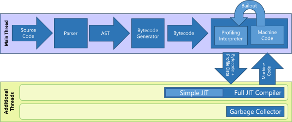
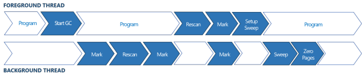

1.3. ChakraCore¶
1.3.1. 简介¶
ChakraCore是一个完整的JavaScript虚拟机，它拥有着和Chakra几乎相同的功能与特性。但在它们之间有两个不同点：
- ChakraCore没有公开Chakra与浏览器/UWP之间的私有绑定部分
- Chakra使用一套基于COM的诊断API，而ChakraCore使用一套基于JSON的诊断API。这套API是平台无关的，可用于之后不同实现之间的操作。

1.3.2. 执行流程¶
ChakraCore支持一种多级架构，包括：
- (1)用来快速启动的解释器
- (2)用来产生高度优化的代码的并行JIT编译器
- (3)一个并行的后台GC来降低停顿，提高响应速度
一旦JavaScript开始运行，ChakraCore首先进行一次快速的语法解析来报告语法错误。接下来ChakraCore的每个函数会按需执行(as-needed-per-function)。
只要有可能，ChakraCore就会延迟那些暂时不需要的函数的语法解析和AST的生成，并且将JIT编译和垃圾回收等工作推出主线程。这样做的目的是为了有效利用硬件资源去保证响应速度。
当一个函数第一次执行时，ChakraCore的parser将产生一个AST来代表这个函数的源码，随后AST会被翻译为字节码，这些字节码将由ChakraCore解释器直接执行。在解释执行期间解释器会收集一些程序信息，如类型信息、调用次数，这些信息会被用来帮助JIT编译器生成高度优化的机器码。
当ChakraCore在解释器中发现一个函数或者循环(loop-body)被多次执行时，会将其送入后台JIT编译队列为这个函数生成优化的代码。一旦这些优化代码准备就绪，ChakraCore就会替换函数和循环的入口到这些新代码，之后的执行将远快于之前的解释执行。
ChakraCore的后台JIT编译器借助解释器生成的profile来推断可能出现的模式，从而生成高度优化的本地代码。当得到JavaScript代码的某些动态特性后，如果代码行为打破了基于profile的预测，编译出的代码将会被bailout到解释器，进行字节码解释执行以获取更多的profile数据。
为了平衡JIT编译时间与内存占用，ChakraCore并不在一个函数每次释出时编译它，而是利用缓存下来的编译结果直到释出次数达到一定的门槛，之后才会迫使代码重新被JIT编译并且抛弃旧的编译结果。

1.3.3. JIT编译器¶
ChakraCore拥有两级JIT编译器。在同一个后台线程中，ChakraCore有一个完全JIT编译器(Full JIT Compiler)用来产生高度优化的代码；还有一个简单JIT编译器(Simple JIT Compiler)，这是一个有较少优化版本的完全JIT编译器。
在执行时，ChkaraCore首先将解释执行的函数换入简单JIT编译器，然后才是完全JIT编译。
在大多数情况下，简单JIT编译耗时少于完全JIT编译，所以相比单级JIT，这种架构有助于更快启动app。
多一个简单JIT的另一个优势是，当”释出”发生时，函数的执行可以更快地从解释切换到简单JIT编译，直到完全JIT编译的代码就绪。简单JIT编译的代码执行管线依然继续收集profile信息以供完全JIT编译器使用。
无论何时，只要有潜在的未被利用的硬件资源，ChakraCore也可为后台JIT编译器产生多个并行线程。存在多个后台JIT编译线程时，ChakraCore的简单JIT编译和完全JIT编译的工作都会被分摊到多个编译线程上进行跨线程编译。这有助于在总体上减少JIT编译延迟。
1.3.4. 垃圾回收¶
ChakraCore拥有一个分代式标记清扫垃圾回收器，它支持并行、部分回收。当完全并行GC被初始化，ChakraCore的后台GC会进行一个初始标记阶段，然后重新扫描(rescan)来找出在这个初始标记阶段被主线程修改的对象，随后再运行第二个标记阶段来标记重新扫描时被修改的对象。当第二个标记阶段扫描结束后，主线程暂停执行并启动最终的重新扫描(final rescan)，之后最终的标记阶段(final marking pass)会被分解到主线程和已经在执行的GC线程。最后清扫阶段由后台GC线程完成，并且将无法到达的(unreachable)的对象重新加入分配池。

1.3.5. 代码结构¶
.
├─bin 生成可执行文件的工程，比如ChakraCore.dll
├─Build 各个平台下的makefile或项目工程
├─jenkins 给jenkins使用的检查和编译的脚本
├─lib ChakraCore主要实现
│ ├─Backend JIT的实现
│ ├─Common ChakraCore的基础库
│ │ ├─Codex 编码转换，比如UTF-8
│ │ ├─Common 基础类，比较杂，比如和整型相关的数学计算，时间处理等
│ │ ├─Core 比较杂，和ChakraCore的功能相关的代码，比如配置文件等
│ │ ├─DataStructures 基础数据结构，比如数组，链表，HashMap等
│ │ ├─Exceptions 常用异常
│ │ ├─Memory 内存管理，GC
│ │ ├─PlaceHolder ...
│ │ ├─PlatformAgnostic 和平台相关的信息的封装，但这里只有定义
│ │ └─Util ...
│ ├─JITClient 进程外JIT的客户端
│ ├─JITIDL 进程外JIT的协议，IDL定义
│ ├─JITServer 进程外JIT的服务端
│ ├─Jsrt Jsrt API，主要用于将ChakraCore内部结构合理的暴露出来
│ ├─Parser JavaScript Parser
│ ├─Runtime Runtime，ChakraCore最关键的部分之一
│ │ ├─Base Runtime中的顶层数据结构
│ │ ├─ByteCode ByteCode相关的实现
│ │ ├─Debug 用于支持调试的类
│ │ ├─Language 比较杂，和JavaScript语言相关但又不易归类的部分
│ │ ├─Library JavaScript对象模型的实现，bool/int/map/regex/promise等
│ │ ├─Math 计算相关，加减乘除等
│ │ ├─PlatformAgnostic 平台相关的实现
│ │ └─Types 用来实现对象模型的基础类型，比如抽象的Type和RecylableObject
│ └─WasmReader WebAssembly加载器
├─manifests 用于定义ETW Events的manifest
├─pal 一个C标准库的实现，可以使用USING_PAL_STDLIB宏来启用
├─test 测试用例
└─tools 一些小工具